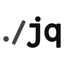
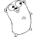
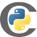

Ambra — Founding Senior Engineer December 2025–present
Built Ambra's production platform from its initial prototype. Now lead engineering across denials management, claim status, claims posting, analytics, and AI-assisted EMS documentation.
Built the denial workflow end to end: SFTP and file ingestion, data normalization, payer and funding classification, document retrieval, PDF redaction, appeal-packet generation, and mail, fax, and portal submission.
Built a TypeScript and React application for dense billing workflows involving thousands of payer and denial configurations, live background jobs, large claim queues, and high-resolution medical attachments.
Built the core backend in Go and PostgreSQL, with Python and Django services for agent workflows, deployed on GCP and Cloud Run.
Integrated X12 transactions, EMS record systems, clearinghouses, payer portals, SFTP sources, telephony systems, and browser automation with Playwright and direct network integrations.
Built ephemeral pull-request environments, tenant-aware visual testing, PHI-leak checks, automated migration coordination, and application/database revision gating.
Led the company through HIPAA and SOC 2 readiness while owning architecture, infrastructure, customer launches, production support, and a large share of implementation.
Managed and hired engineers, designed technical interviews, ran one-on-ones and code reviews, and worked directly with customers from discovery through production.
Simbie AI — Founding Engineer May 2025–December 2025
Reworked a bespoke, single-customer healthcare voice-agent system into a multitenant platform with organization isolation, configurable agents, phone routing, EHR credentials, and complete white-labeling.
Took three medical practices from discovery through agent design, EHR integration, QA, production launch, and ongoing operation.
Built voice-agent workflows for scheduling, patient lookup, insurance verification, and outbound patient communication.
Built low-latency EHR integrations with caching and advance schedule preloading, so agents could access patient and appointment data during live calls.
Developed an internal call-evaluation system that reviewed conversations, generated structured criticism, retained recurring failure patterns, and informed improvements to agent behavior.
Helped hire and operationalize a remote QA team that reviewed production calls and supplied human feedback.
Worked across Python, TypeScript, PostgreSQL, Redis, RabbitMQ, AWS, Grafana, database design, queues, deployment, and production reliability.
Operated as the principal available engineer during critical periods while remaining directly responsible for customer implementation and support.
Built clinical-documentation integrations across about 20 EHRs and 30 practice configurations for the Athelas Scribe product.
Expanded the integration platform from generic EHR behavior to configurable, practice-specific workflows.
Reduced the execution time of an important RPA-based integration workflow from about 10 minutes to 20 seconds.
Built a greenfield React client for a hardware-integrated clinical workflow, developed with a major U.S. health system.
Helped migrate the scribing client from Flutter to React Native and package the full application as an embeddable SDK for partner healthcare applications.
Built integration infrastructure that let providers launch the complete scribing workflow from within an existing mobile application.
Worked on DOM-based Chrome-extension automation across legacy EHR interfaces.
Designed and prototyped a domain-specific language for remotely configurable EHR interactions, which reduced dependence on hard-coded extension releases and protected proprietary integration logic.
RISC-V Mentorship — Mentee March 2024–May 2024
Worked with OCaml, Sail, TypeScript, and React to turn RISC-V specifications into structured, usable developer resources.
Built JSON-driven specification conversion and code-generation tooling.
Developed an interactive React reference for exploring the RISC-V instruction-set architecture.
Copy Doc Comments — A copy-comments button for Google Docs to grab all the comments for LLMs.
🚶Walk Reminder — A small, lightweight menu-bar app that gets you to stand up more.
💿Vinyl — Generate a looping, spinning-vinyl video from any audio file, in your browser.
🧰HAR to cURL — Cleans up your HAR files to make them friendlier for LLMs.
Archived
⚙️ASM Garden — A LeetCode-style playground for x86-64 assembly: small problems, in-browser assembler, instant feedback. A gentler on-ramp to low-level programming.
🧪Strudel — Spin up and tear down ephemeral Ethereum testnets for teams, so a whole engineering org can share forks and state without stepping on each other.
🔗Elcair — Point at an Ethereum contract ABI, get a typed TypeScript SDK - no hand-rolled wrappers, no drift between contract and client.
🎓Profs — Search university faculty by research interest and recent publications - find the right advisor, reviewer, or collaborator without trawling department pages.
Open source
In progress:oh-my-pi - adding folder-to-profile bindings to OMP, so starting the coding agent inside a project automatically selects the right isolated profile and model accounts. The work includes commands to bind, inspect, list, and remove folder mappings; linked-worktree support; explicit CLI and environment override precedence; and startup visibility for the active profile and Anthropic account.
htsjdk - name the preceding record, not the offending one twice, when alignments are added out of order.
StackExchange.Redis - return 0 from SortedSetRemove instead of sending a member-less ZREM the server rejects.
uutils/findutils - stop locate, updatedb and xargs panicking on a non-UTF-8 argument.
Kombu - accept memoryview and bytearray message bodies in the YAML decoder.

jq - reject raw NUL bytes in the parser instead of silently truncating tokens.

Go - cmd/compile: lower float min/max branch idiom to MINSD/MAXSD/FCSEL.

Cython - fix a compiler crash on starred names in assignment targets during constant folding.
Ruff - restrict FURB131 (delete-full-slice) to lists; the dict rewrite was a runtime KeyError.
tmc/x12 - return an error instead of panicking when Marshal receives a nil ISA header.
tmc/x12 - support segments larger than 64 KB with a configurable size limit.
Sail - extract register information in JSON output.
uutils/coreutils - report a missing date -f input file instead of panicking.
RocksDB - exclude blob-separated values from memtable garbage statistics, so compaction is not driven by a bogus ratio.
CockroachDB - stop the optimizer resolving a qualified name to a whole-row record when a column of that name exists.
Knex - accept an options object as the primary key constraint name on MySQL and SQLite.
PgBouncer - reset per-user settings when a user leaves the [users] section, instead of leaking the old values.
redis-rs - report the underlying server error from the r2d2 is_valid health check rather than a fabricated broken pipe.
ACPICA - fix the truncated count of external control methods reported by iASL.
tpm2-tools - read the input to its end instead of asking for a size, so pipes and character devices work.
Bubblewrap - reject empty path arguments instead of silently operating on the current directory.
RootlessKit - exclude the caller's own UID and GID from the subid ranges handed to the child.
Flatpak - fix column alignment next to a decimal column in the table printer.
Flatpak - do not update appstream data when --no-pull is given.
Flatpak - emit valid option names for D-Bus name policies.
vcflib - only flag single base substitutions as transversions in vcfclassify.
Research
EmberDB - FHIR-native time-series storage for critical care. A specialized database treating FHIR Observations as first-class citizens, benchmarked against InfluxDB, TimescaleDB, and QuestDB on MIMIC-III data.
Healthcare Voice Agent Security - Evaluating AI voice platforms deployed in healthcare settings, covering prompt injection, PHI extraction, and synthetic voice attacks with a novel FHIR-compliant testing framework.
Privacy-Preserving Healthcare Cost Prediction - Custom secure multiparty computation protocol enabling joint model training across hospitals, insurers, and public health agencies without exposing raw data.
zkDNA - Zero-knowledge proofs for negative STR DNA match verification, allowing proof of non-match in forensic contexts without revealing actual genetic data.
Formal Verification of FHIR Resources - Applying lightweight formal methods (Alloy) to verify structural integrity and safety invariants of HL7 FHIR data models.
Reading MUMPS at Scale - An open tree-sitter grammar for MUMPS, the language behind the VA's VistA EHR. Parses 98.6% of VistA's 33,951 routines into an analyzable syntax tree, validated against YottaDB, with call-graph and runtime-code-generation measurements.

 Commure — Software Engineer II
Commure — Software Engineer II Security CLI
Oat
A local, encrypted TOTP vault for the terminal, protected by the operating system keychain.
Security CLI
Oat
A local, encrypted TOTP vault for the terminal, protected by the operating system keychain.